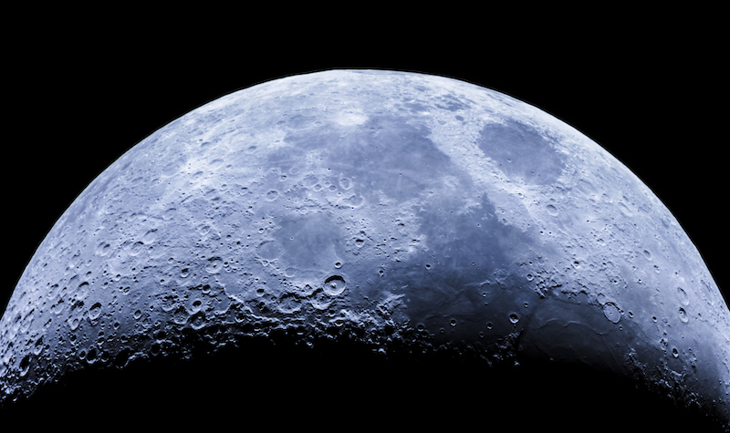
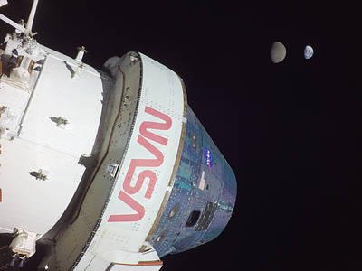
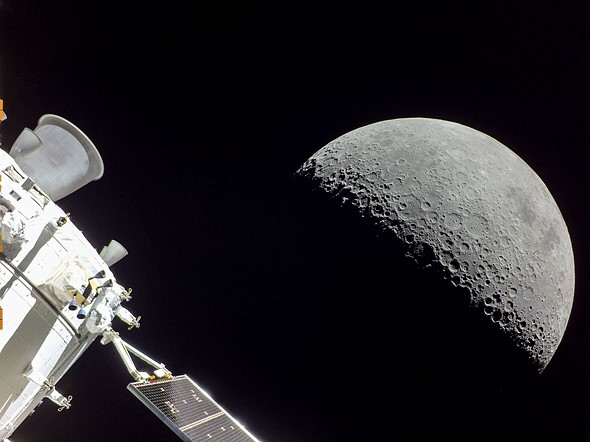
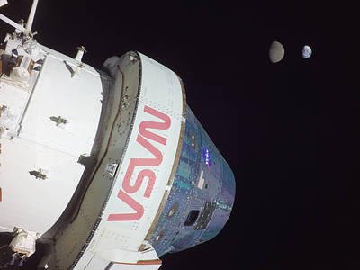
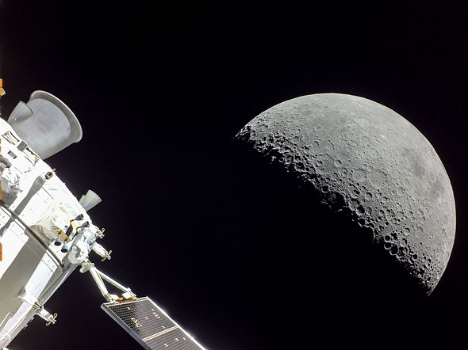

SITUACION ACTUAL
La situación actual del programa Artemis de la NASA es que están en desarrollo las misiones para regresar a la luna con un enfoque en la colaboración con socios comerciales e internacionales. NASA está trabajando en la construcción de una nave espacial llamada Orion, un sistema de propulsión llamado SLS (sistema de cohete de gran tamaño) y una serie de vehículos y rovers para explorar la superficie lunar. En el año 2021, la NASA lanzó el módulo de servicio y los módulos de habitación en órbita lunar para el Gateway. También se han realizado varios vuelos de prueba con el SLS y Orion, y se está trabajando en el desarrollo de nuevos sistemas para el aterrizaje en la superficie lunar. Aunque se ha sufrido algunos retrasos debido a problemas técnicos y a la pandemia del COVID-19, la NASA sigue trabajando para cumplir con su objetivo de enviar a los primeros astronautas a la Luna en 2024 y establecer una presencia permanente en la Luna en el futuro.

NOTICIAS
Orion ya viaja de vuelta a casa: cuándo tendrá lugar la entrada en la Tierra de la nave
El viaje de regreso culminará con un amerizaje en el Océano Pacífico previsto para el próximo 11 de diciembre.
Orion sale este viernes de su órbita retrógrada distante y comienza su vuelta a la Tierra.
La cápsula Orion de la NASA empezó ayer la primera maniobra para abandonar su órbita lunar retrógrada distante con el encendido de los motores, de esta manera, inicia su viaje de regreso a la Tierra.
La operación del encendido del motor tuvo lugar a las 22:53 hora española peninsular tras 1 minuto y 45 segundos de espera, además, se pudo visualizar en tiempo real gracias a las imágenes transmitidas por la cápsula al Centro Espacial Johnson (Houston).
A esa hora, según las imágenes, la nave se encontraba a 382.721 kilómetros de la Tierra y 85.214 kilómetros de la Luna. El viaje de regreso culminará con un amerizaje en el Océano Pacífico el próximo 11 de diciembre, además, la finalidad de esta misión consistió en mitigar el impacto de la radiación espacial en los humanos.
 


